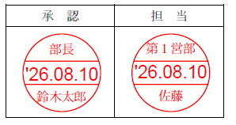

★ 【Python】PDFファイルに日付印を捺印 ★
【１】はじめに
現在の会社業務ではペーパーレス化が進んでおり、社内資料や社外への資料も、PDF形式のファイルで取り扱われることが一般化しています。
一方で、従来は紙で行っていたものが、そのままPDFに置き換えられているケースも良くあります。
このケースでは、以下の２パターンが多いと思います。
- 印刷してスタンプを押す。➔スキャナで再びPDF化する
- AcrobatReaderのスタンプ機能を使用して捺印する
手間を考えると、1の方法は論外として、2の方法も結構、操作に手間取ります。
特に承認者の立場の人は複数の部下からの承認依頼が来るのでなおさら手間になると思います。
そこで今回、PDFの「担当欄」、又は「承認欄」の下に日付印を捺印するPythonスクリプトを作成しましたので紹介致します。
本スクリプトで、PDFに下記のような日付印を捺印することができます。
日付印は(ビットマップではなく)描画機能を使用しているので拡大してもきれいに表示されます。

【２】動作環境
本スクリプトは、以下の環境で動作を確認しています。
- OS: Windows 11
- PyMuPDF 1.25.5: Python bindings for the MuPDF 1.25.6 library (rebased implementation).
- Python 3.12 running on win32 (64-bit)
【３】機能
本スクリプトは、以下の機能を有しています。
- スクリプトと同じフォルダに存在するPDFファイルに文字列"担 当"をみつけるとその下に捺印する
- サブフォルダ"outfiles"を作成し、捺印したPDFファイルを保存する
- 複数のPDFファイルがある場合、上記1、2をファイル数分、繰り返す
【４】ソースコード
適当なフォルダに、ファイル名「stamp_sample.py」で保存してください。
import fitz # PyMuPDF
from datetime import datetime
import os
SUBDIR = 'outfiles'
# "担 当" 又は "承 認"
ROLE = "担 当"
DIV_NAME = "第１営部" # 漢字パート
SIGN_NAME = " 佐藤 "
# ROLE = "承 認"
# DIV_NAME = " 部長" # 漢字パート
# SIGN_NAME = "鈴木太郎"
def draw_stamp(page, offset_x, offset_y, ratio):
shape = page.new_shape()
base_w = 100.0 * ratio
base_h = 100.0 * ratio
adjust = 3.0 * ratio
line_width = 1.5 * ratio
font_size1 = 23 * ratio
font_size2 = 16 * ratio
# 丸
center_x = base_w / 2.0 + offset_x
center_y = base_h / 2.0 + offset_y
radius = base_w / 2.0
shape.draw_circle((center_x, center_y), radius)
# 上線
y = base_h * 0.35 + offset_y
x1 = offset_x + adjust
x2 = offset_x + base_w - adjust
shape.draw_line ( ( x1, y), (x2, y) )
# 下線
y = base_h * 0.65 + offset_y
x1 = offset_x + adjust
x2 = offset_x + base_w - adjust
shape.draw_line ( ( x1, y), (x2, y) )
shape.finish(color=(1, 0, 0), width=line_width)
shape.commit()
# 部署追加
x1 = offset_x + adjust * 6
y1 = offset_y + adjust * 3
x2 = x1 + base_w
y2 = y1 + base_h
font_path = "C:\\Windows\\Fonts\\msmincho.ttc"
sign_rect = fitz.Rect(x1,y1,x2, y2)
page.insert_textbox(sign_rect, DIV_NAME, fontsize=font_size2, fontname="japan", fontfile=font_path, color=(1, 0, 0))
# サイン追加
x1 = offset_x + adjust * 6
y1 = offset_y + base_h * 0.70
x2 = x1 + base_w
y2 = y1 + base_h
sign_rect = fitz.Rect(x1,y1,x2, y2)
font_path = "C:\\Windows\\Fonts\\msmincho.ttc"
page.insert_textbox(sign_rect, SIGN_NAME, fontsize=font_size2, fontname="japan", fontfile=font_path, color=(1, 0, 0))
# 日付追加
x1 = offset_x + adjust
y1 = offset_y + base_h * 0.35
x2 = x1 + base_w
y2 = y1 + base_h
sign_rect = fitz.Rect(x1,y1,x2, y2)
date_txt = datetime.now().strftime("'%y.%m.%d")
font_path = "C:\\Windows\\Fonts\\msgothic.ttc"
page.insert_textbox(sign_rect, date_txt, fontsize=font_size1, fontfile=font_path, color=(1, 0, 0))
def add_stamp_to_pdf(input_pdf, output_pdf):
# PDFファイルを開く
pdf_document = fitz.open(input_pdf)
page = pdf_document[0]
text_instances = page.search_for(ROLE)
x0, y0, x1, y1 = text_instances[0]
x1 -= 22
y0 += 16
draw_stamp(page, x1, y0, 0.50)
# 出力PDFを保存
pdf_document.save(output_pdf)
# メイン
def main():
try:
os.mkdir(SUBDIR)
except:
print(SUBDIR,'フォルダは既に存在します')
files = os.listdir('.')
for input_file in files:
if '.pdf' in input_file:
output_file = SUBDIR + '\\' + input_file
add_stamp_to_pdf(input_file, output_file)
print(f"電子印を押したPDFファイルは {output_file} として保存されました。")
if __name__ == "__main__":
main()
【５】注意事項
実行にあたっては、以下の点にご注意ください。
- 以下のようなPDFは失敗する場合があります。
- パスワード付きPDF
- 編集禁止PDF
- 電子署名済みPDF
- サブフォルダ("outfiles")とPDFファイルを作成しますので、書込み権限のない場所で実行すると失敗します。
例えば以下のフォルダでの実行は避けたほうが良いです。
- C:\Program Files
- システム保護フォルダ
- PDFを扱う、PyMuPDFライブラリが必要です。インストールは以下の方法で実施できます。
pip install pymupdf
上記でエラーになる場合は、以下のように入力して下さい。
python -m pip install pymupdf
- エラー処理がちゃんと実装されていません
例えば、PDF内にROLEで示された文字列が見つからなかったときは例外になります。
【６】実行
特にオプションはいりません。
python stamp_sample.py
【例1】
このPDFファイルに対して本スクリプトを実行すると
新たに、担当印が捺印されたPDFファイルが作成されます。
【例2】
ソースコードを以下のように変更すると部長印が捺印されたPDFファイルが作成されます。
# "担 当" 又は "承 認"
# ROLE = "担 当"
# DIV_NAME = "第１営部" # 漢字パート
# SIGN_NAME = " 佐藤 "
ROLE = "承 認"
DIV_NAME = " 部長" # 漢字パート
SIGN_NAME = "鈴木太郎"
【７】技術的解説
本スクリプトは、目印となる"担 当"(又は"承 認")をサーチして、その近傍に日付印を描画して、新たにPDFを保存するスクリプトです。
関数としては、main➔add_stamp_to_pdf➔draw_stamp の順に呼び出されます。
全体処理としては、以下の動きになります。
- サブフォルダ("outfiles")を作成
- PDFファイルを検索(なければここで終了)
- 2で見つけたPDFをロードする
- スタンプを描画する
- 4で描画したPDFを、1.のサブフォルダに保存
- 2に戻る
(1)main:
以下、主な行の説明を記載します。
| 行番号 | 実行コード | 解説 |
| 1-3 |
import fitz # PyMuPDF
from datetime import datetime
import os
|
【ライブラリロード】
fitz (PyMuPDF) : PDFの読み込み・編集・保存
datetime : 日付・時刻処理（日付印用）
os : フォルダ作成などのファイル操作
|
| 5 | SUBDIR = 'outfiles' | 【変数】
ファイル出力先(サブフォルダ) |
| 8-10 |
ROLE = "担 当"
DIV_NAME = "第１営部"
SIGN_NAME = " 佐藤 "
|
【変数】
ROLE : スタンプを捺印する場所の目印
DIV_NAME : スタンプの部署部分
SIGN_NAME : スタンプの名前部分
|
| 16-72 |
def draw_stamp(page, offset_x, offset_y, ratio): |
【スタンプの描画処理】
page : (引数)PDFのページのオブジェクト
offset_x : スタンプを描く座標(x)
offset_y : スタンプを描く座標(y)
ratio : スタンプの大きさ
|
| 74-90 |
add_stamp_to_pdf(input_pdf, output_pdf): |
【PDF読み込みと、書き込み】
input_pdf : 入力ファイル(読み込むPDF)のファイル名
output_pdf : 出力ファイル(書き込むPDF)のファイル名
|
| 93-105 |
main(): |
【メインルーチン】
(1)サブフォルダ(SUBDIR="outfiles")を作成
(2)カレントフォルダで、".pdf"ファイルを検索
➔ 見つければ、出力ファイル(output_file名)を作成
(3)入力PDFと出力PDFファイル名を引数にadd_stamp_to_pdf呼び出し
|
【８】まとめ
今回紹介したスクリプトは、PDFの書式に強く依存するため、これをみなさんの環境で使用する場合は必ず調整が必要になります。
しかし、必要な要素技術は詰め込んであるので、例えばマルチページなど、工夫次第で、いろいろな書式に応用することは出来ます。
毎日同じ書式のPDFに捺印が必要な立場の方には便利ですので、ぜひ活用してみて下さい。
【９】参考
株式会社タカミヤ
【改訂記録】
2026/08/10版：公開
[ホームへ戻る]